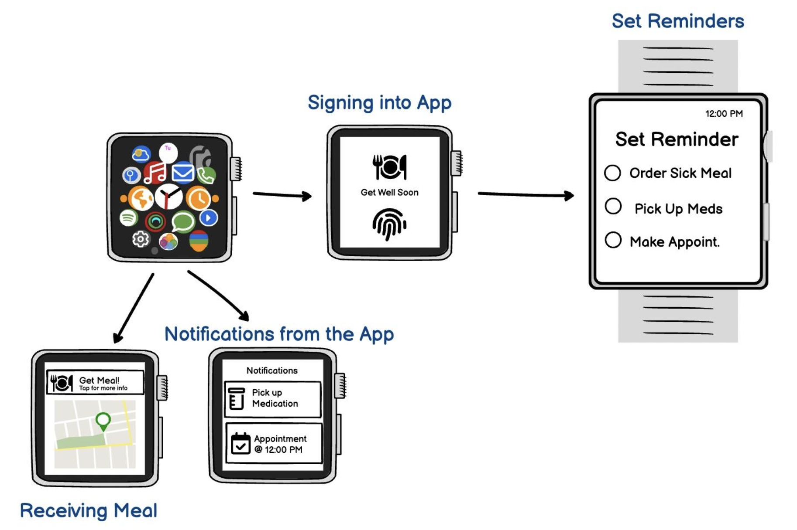
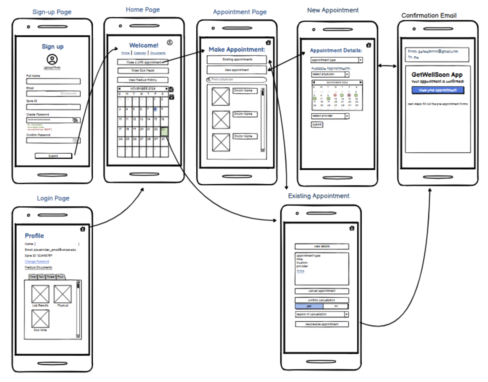
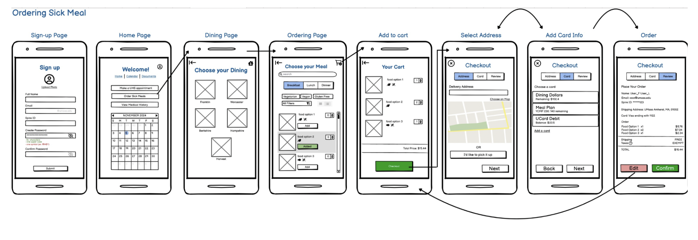
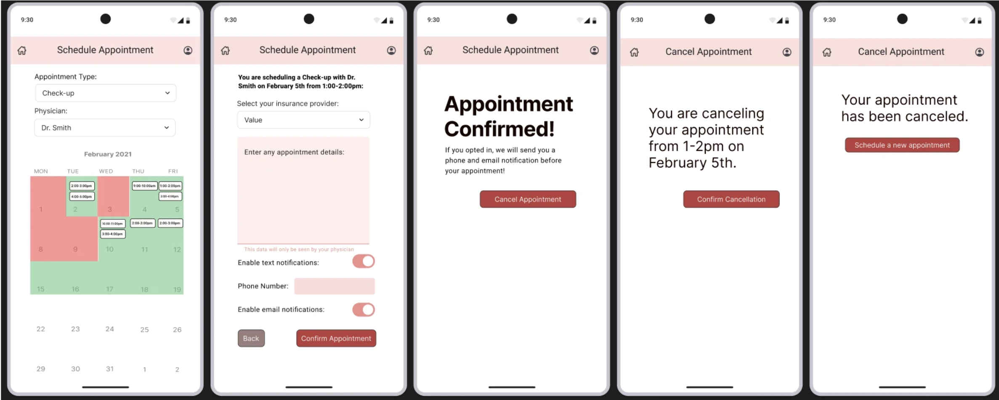
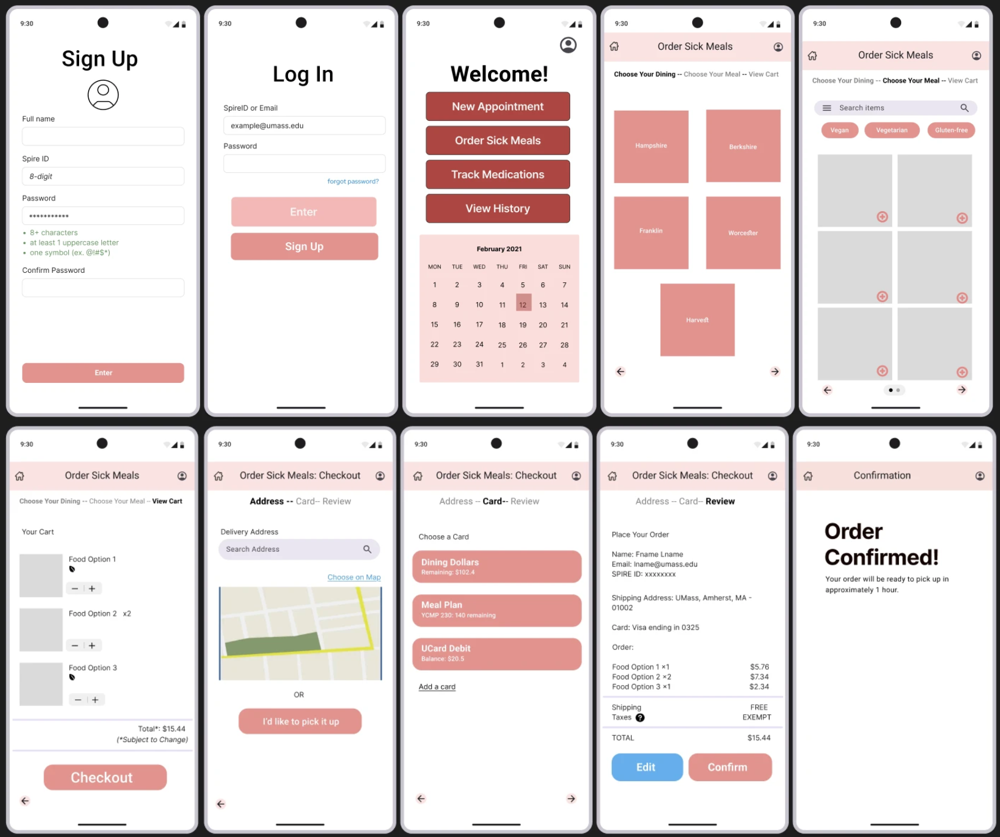

Get Well Soon App
This app is designed to support students during times of sickness by providing a platform for health management that allows students to customize and order meals from UMass dining to their dorms, integrate routine check-ups with University Health Services (UHS), track medication schedules with a built-in calendar, and maintain a detailed illness history for easy access.
Time
Oct 2024 - Nov 2024
Tools
Figma, Balsamiq, Canva,
Microsoft Teams, Google Form
Role
UI/UX Designer and Researcher
The Challenge
How might we create a more flexible and inclusive system that supports sick UMass students by providing customizable meal options, reducing reliance on others, and offering tools for managing appointments and medications—so they can recover with dignity, convenience, and care?
Personas
Name: Sally
Background: Sophomore nursing student at UMass
Challenges:
- No one to help her get essentials.
- Frustrated by lack of support.
- Unhappy she can't choose meals.
Needs:
- Appointment scheduling.
- Customizable meals.
- Organized medical records.
Name: Megan
Background: Freshman, out-of-state student
Challenges:
- Gluten allergy limits options.
- Needs frequent UHS visits.
- Dislikes calling UHS.
- Dorm far from UHS.
Needs:
- Easy way to get gluten-free meals.
- Streamlined UHS booking.
- Better access to medication.
The Solution
We aim to design a more convenient and accessible food ordering and delivery system that:
- Allows students to order meals that fit their needs
- Provides a delivery option for isolated students
- Offers a centralized platform for meal orders, medical appointments, and medicine tracking
- Ensures that sick students can focus on recovery instead of struggling with logistics
Low-fidelity Prototype (Balsamiq)
Track medicines and medical history
Make and track UHS Appointments
Ordering Sick Meals
High-fidelity Prototype (Figma)
Scheduling Appointments
Customizing and Ordering Sick Meals
Heuristic Evaluation

Recommendations:
- Prioritize addressing the error prevention issues to improve usability and user satisfaction.
- Consider enhancing flexibility features and refining the app's aesthetic elements for a more polished user experience.